Russia
Russia
The Russia route: 3 regions, 12 landmarks. Every landmark is built in three stages.
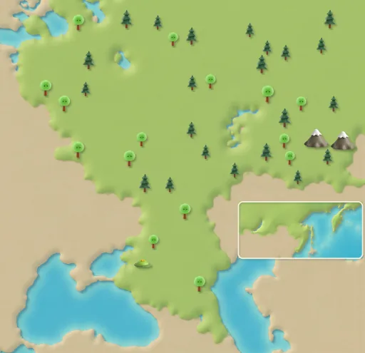
Moscow
Route steps 1–12
St. Basil's Cathedral
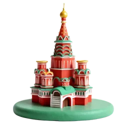
Stage 1 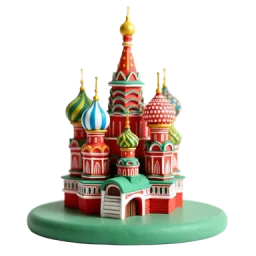
Stage 2 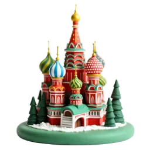
Stage 3 St. Basil's Cathedral was built from 1555 to 1561. Its nine onion domes look like flames rising to the sky. Source: Wikipedia
Bolshoi Theatre
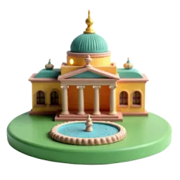
Stage 1 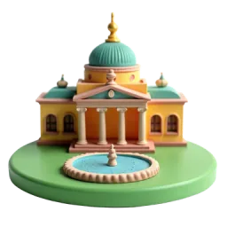
Stage 2 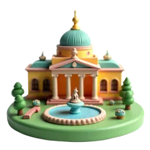
Stage 3 The Bolshoi's story began in 1776. Tchaikovsky's ballet Swan Lake was first performed here in 1877. Source: Wikipedia
Palace-like Metro Station
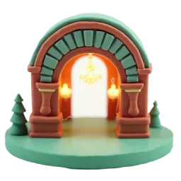
Stage 1 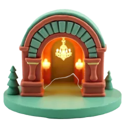
Stage 2 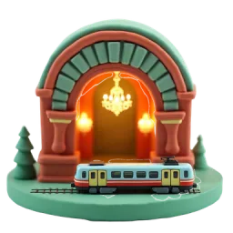
Stage 3 Opened in 1935, the Moscow Metro has stations with marble walls and chandeliers, built as ‘underground palaces’. Source: Wikipedia
Ostankino TV Tower
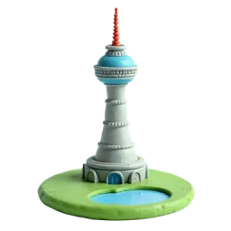
Stage 1 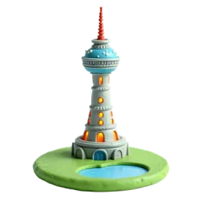
Stage 2 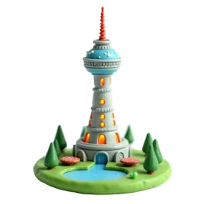
Stage 3 At 540 metres, Ostankino Tower was the tallest structure in the world from 1967 to 1974. Source: Wikipedia
Saint Petersburg
Route steps 13–24
Winter Palace (Hermitage)
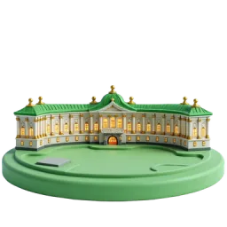
Stage 1 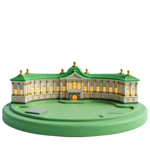
Stage 2 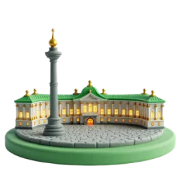
Stage 3 The Winter Palace has about 1,500 rooms and 1,945 windows. Today it is home to the Hermitage Museum. Source: Wikipedia
Church of the Savior on Spilled Blood
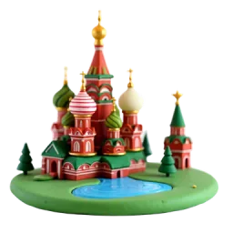
Stage 1 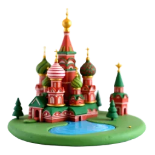
Stage 2 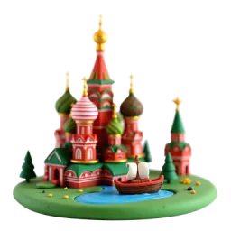
Stage 3 The inside of the church is covered with more than 7,000 square metres of colourful mosaics. Source: Wikipedia
Peterhof Fountains
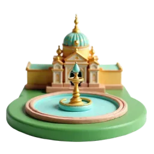
Stage 1 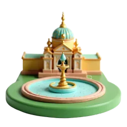
Stage 2 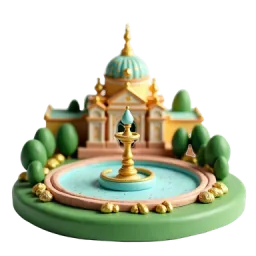
Stage 3 Peterhof, nicknamed ‘the Russian Versailles’, has 64 fountains in its Grand Cascade alone. Source: Wikipedia
Neva Drawbridges
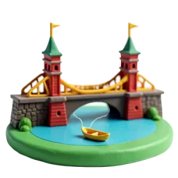
Stage 1 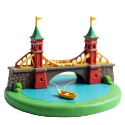
Stage 2 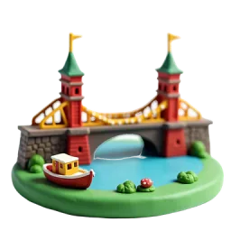
Stage 3 Palace Bridge, like most bridges on the Neva, is raised at night. It first opened to the public in 1916. Source: Wikipedia
Golden Ring
Route steps 25–36
Wooden Churches of Suzdal
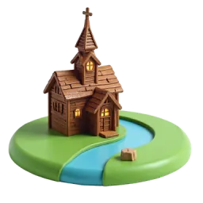
Stage 1 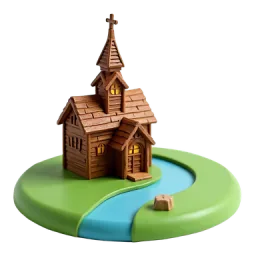
Stage 2 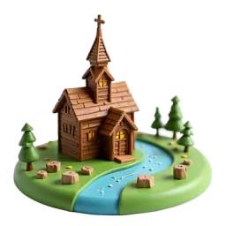
Stage 3 Suzdal's wooden Church of St. Nicholas was built entirely of wood in 1766 and moved here from another village in 1960. Source: Wikipedia
Sergiev Posad Monastery
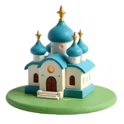
Stage 1 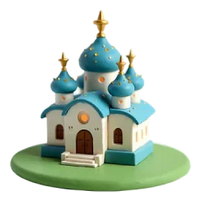
Stage 2 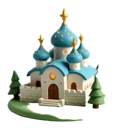
Stage 3 This monastery began in 1337, when Saint Sergius of Radonezh built a small wooden church on a hill. Source: Wikipedia
Golden Gate of Vladimir
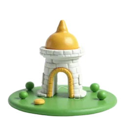
Stage 1 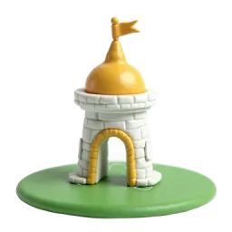
Stage 2 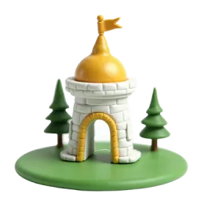
Stage 3 Built between 1158 and 1164, the Golden Gate is the only ancient Russian city gate that partly survives today. Source: Wikipedia
Matryoshka Workshop
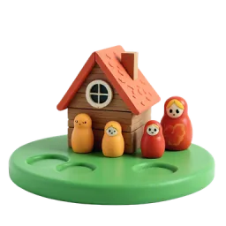
Stage 1 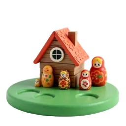
Stage 2 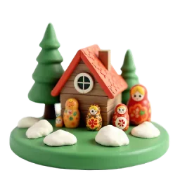
Stage 3 The first Russian nesting doll set was carved in the 1890s. After 1904, production moved to Sergiev Posad. Source: Wikipedia